品目管理 MM（Materials Management）
品目管理 · 組織構造 · 品目マスタ · 自動記帳 · MRP · 購買プロセス
1. 本モジュールのガイド
MM のメインラインは「組織構造とプラントパラメータ → 品目マスタ → 自動記帳 → MRP → 購買から請求書照合まで」です：プラント / 保管場所 / 購買組織 / 購買グループ / MRP 管理担当者 → 会社コードと購買組織への割当 → 品目グループ、計画マージンキー → プラントパラメータ（在庫引当、保管場所ビュー、税コードのデフォルト値、初期期間、MRP パラメータ）→ MRP の有効化、計画実行の番号範囲 → 品目タイプ属性、評価管理、評価クラス（勘定決定の前提）→ 品目マスタ（原材料（ROH）/ 商品（HAWA）/ 完成品（FERT）、MM01）→ 仕入先購買データ（MK01）と購買情報レコード（ME11）→ 自動記帳（OBYC）と在庫勘定は自動記帳のみ → 許容範囲（価格差異 / 入庫 / 請求書ブロック）→ MRP 実行（MD03）と在庫所要量一覧（MD04）→ 購買依頼（ME51N）→ 購買発注（ME21N）→ 入庫（MIGO）→ 請求書照合（MIRO）→ ブロック請求書の解除（MRBR）→ 請求書と会計伝票 → 在庫照会（MMBE）。
このうち「評価クラス + 自動記帳（OBYC/BSX/WRX）」は MM と FI の接点であり、原教材ドキュメントで繰り返しトラブルシューティングが行われた箇所でもあります（「トラブルシューティングと注意点」ページを参照）。
- 組織構造の 4 点セット：プラント / 保管場所 / 購買組織 / 購買グループ、およびその割当関係
- 品目マスタの 3 種類のビュー：基本データ、購買、MRP、会計（評価クラスが記帳勘定を決定）
- 自動記帳
OBYC：BSX（在庫）、WRX（GR/IR）、GBB（費用／差異）などのトランザクションキーの勘定決定 - 購買の全プロセス：
ME51N→ME21N→MIGO→MIRO→MRBR
ドキュメントに出てくる T-code：MM60 MK01 ME11 MM02 FS00 MD03 MD04 ME51N ME21N MIGO MIRO MRBR MMBE（詳細は T-code / IMG パス早見表 を参照）
2. タスク目次（42 件）
そのうち 42 件のタスクで、原教材ドキュメントの IMG 設定メニューパスが示されています；IMG 設定 のマークが付いているのはカスタマイジング（設定）タスク、業務処理 と付いているのは日常業務の操作タスクです。表示がないタスクは原文でも明示されておらず、タスク名からご自身で判断してください（一般に「～の定義／～パラメータのメンテナンス」＝ IMG 設定、「伝票・指図・請求書の登録／入力／照会」＝業務処理）。
3. 手順（タスクごと）
プラントを登録
IMG設定（カスタマイズ）7 画面 / 3 ステップ原語（中国語）
企业结构 → 定义 → 后勤常规 → 定义、复制、删除、检查工厂-
前の画面に続けて操作します（画面 516）
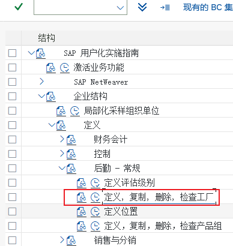
画面 516image524.png · 388×410 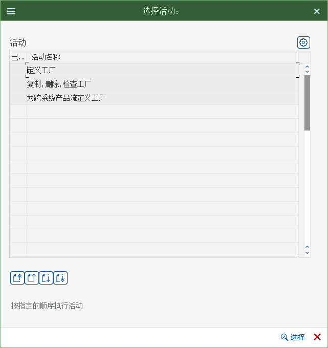
画面 517image525.png · 641×680 -
ダブルクリックしてプラントを定義
原文
双击定义工厂
画面 518image526.png · 499×180 -
0001 を選択し、「コピー」をクリック
原文
选择 0001，点击复制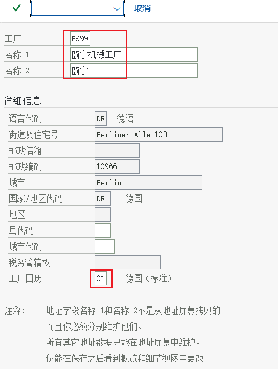
画面 519image529.png · 469×623 
画面 520image530.png · 634×950 画面 519image529.png · 469×623 画面 520image530.png · 634×950
保管場所を登録する
IMG設定（カスタマイズ）4 画面 / 4 ステップ原語（中国語）
企业结构 → 定义 → 物料管理 → 维护仓储地点-
エンタープライズ構造－定義－品目管理－保管場所のメンテナンス
原文
企业结构－定义－物料管理－维护仓储地点
画面 523image531.png · 303×509 -
前の画面に続けて操作します（画面 524）
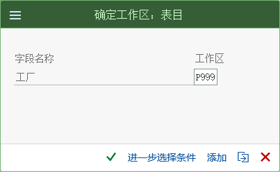
画面 524image532.png · 403×248 -
Enter
原文
回车
画面 525image533.png · 423×173 -
「新規エントリ」をクリック
原文
点击新条目
画面 526image534.png · 377×252 教材ノート0003 輸送教材ノート0001 倉庫教材ノート0002 生産
購買組織を登録
IMG設定（カスタマイズ）3 画面 / 3 ステップ原語（中国語）
企业结构 → 定义 → 物料管理 → 维护采购组织-
エンタープライズ構造－定義－品目管理－購買組織のメンテナンス
原文
企业结构－定义－物料管理－维护采购组织
画面 527image535.png · 301×371 -
前の画面に続けて操作します（画面 528）

画面 528image536.png · 415×143 -
「新規エントリ」をクリック
原文
点击新条目
画面 529image537.png · 365×249 教材ノートY999 頤寧購買組織
購買グループを登録
IMG設定（カスタマイズ）3 画面 / 3 ステップ原語（中国語）
物料管理 → 采购 → 创建采购组-
品目管理－購買－購買グループの登録
原文
物料管理－采购－创建采购组
画面 530image538.png · 501×259 -
前の画面に続けて操作します（画面 531）

画面 531image539.png · 616×206 -
「新規エントリ」をクリック
原文
点击新条目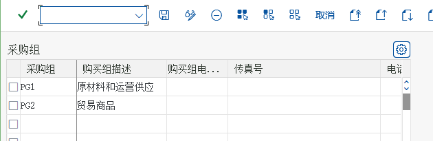
画面 532image540.png · 630×205 教材ノートPG1 原材料と運営供給教材ノートPG2 商品（HAWA）
MRP 管理担当者を定義
IMG設定（カスタマイズ）4 画面 / 3 ステップ原語（中国語）
生产 → 物料需求计划 → 主数据 → 定义 MRP 控制者| 項目（日本語） | 画面の中国語 | 教材の設定値 |
|---|---|---|
| プラント | 工厂 | P999 |
| プラント | 工厂 | P999 |
-
生産－資材所要量計画－マスタデータ－MRP 管理担当者の定義
原文
生产－物料需求计划－主数据－定义 MRP 控制者
画面 533image541.png · 328×395 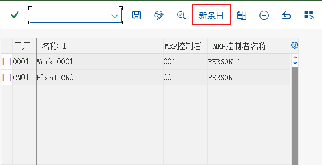
画面 534image542.png · 545×280 -
「新規エントリ」をクリック
原文
点击新条目
画面 535image543.png · 520×497 -
MRP 管理担当者 001 自製製品
原文
MRP 控制者 001 自制品
画面 536image544.png · 539×504 教材ノートMRP 管理担当者 002 商品（HAWA）
プラントを会社コードに配賦
IMG設定（カスタマイズ）3 画面 / 3 ステップ原語（中国語）
企业结构 → 分配 → "后勤-常规" → 给公司代码分配工厂-
エンタープライズ構造－割当－「ロジスティクス一般」－会社コードへのプラントの割当
原文
企业结构－分配－"后勤-常规"－给公司代码分配工厂
画面 537image545.png · 504×261 -
前の画面に続けて操作します（画面 538）
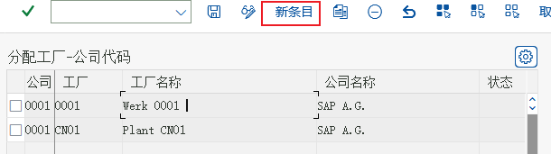
画面 538image546.png · 610×171 -
「新規エントリ」をクリックし、C999 とプラント P999 を選択して「保存」ボタンをクリックします
原文
点击新条目，选择 C999，选择P999工厂，点击保存按钮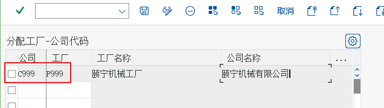
画面 539image547.png · 636×179
購買組織を会社コードに配賦
4 画面 / 3 ステップ原語（中国語）
企业结构 → 分配 → 物料管理 → 给公司代码分配采购组织-

画面 540image548.png · 355×313 -
解説： 1 つの購買組織は複数のプラントの購買の IMG 設定を同時に担当できます
エンタープライズ構造－割当－品目管理－会社コードへの購買組織の割当原文
解释:一个采购组织可以同时负责几个工厂的采购后台
企业结构－分配－物料管理－给公司代码分配采购组织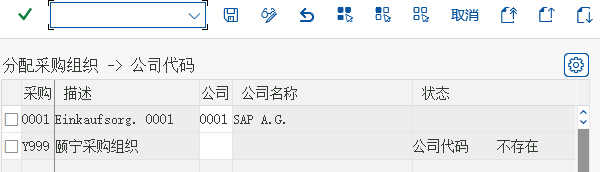
画面 541image549.png · 600×172 -
C999 を選択し、「保存」ボタンをクリックします
原文
选择 C999 点击保存按钮
画面 542image550.png · 638×179 
画面 543image551.png · 624×190
プラントを購買組織に配賦
IMG設定（カスタマイズ）2 画面 / 2 ステップ原語（中国語）
企业结构 → 分配 → 物料管理 → 给工厂分配采购组织-
エンタープライズ構造－割当－品目管理－プラントへの購買組織の割当
原文
企业结构－分配－物料管理－给工厂分配采购组织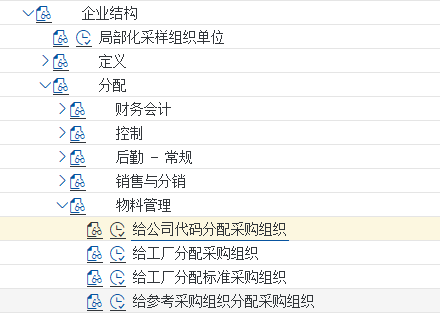
画面 544image552.png · 440×313 -
購買選択 Y999、プラント選択 P999 で「保存」をクリック 購買選択 Y999、プラント選択 P999 で「保存」をクリックし、「新規エントリ」をクリック
原文
采购选择 Y999，工厂选择P999 点击保存采购选择 Y999，工厂选择P999 点击保存点击新条目
画面 545image553.png · 617×210 教材ノート「確認」をクリックした後、「保存」ボタンをクリック
品目グループを定義
3 画面 / 3 ステップ原語（中国語）
后勤常规 → 物料主记录 → 设置关键字段 → 定义物料组-
ロジスティクス一般－品目マスタレコード－キー項目の設定－品目グループの定義
原文
后勤常规－物料主记录－设置关键字段－定义物料组
画面 546image554.png · 268×471 -
解説： 品目は 3 つのグループごとに統計分析する必要があるため、品目マスタをメンテナンスする際に品目グループを割り当てる必要があります。IMG 設定
原文
解释：物料需要按三个组来统计分析，在维护物料主数据的时候，需要分配物料组后台
画面 547image555.png · 608×142 -
「新規エントリ」をクリックし、3 つの品目グループを追加します
原文
点击新条目，新增 三个物料组
画面 548image556.png · 612×163
| 0001 | 原材料（ROH） |
| 0002 | 完成品（FERT） |
| 0003 | 商品（HAWA） |
計画マージンキーを定義
IMG設定（カスタマイズ）3 画面 / 2 ステップ原語（中国語）
物料管理 → 基于消费的计划 → 计划 → 定义浮点（计划毛利码）-
品目管理－消費ベースの計画－計画－浮動（計画マージンキー）の定義
原文
物料管理－基于消费的计划－计划－定义浮点（计划毛利码）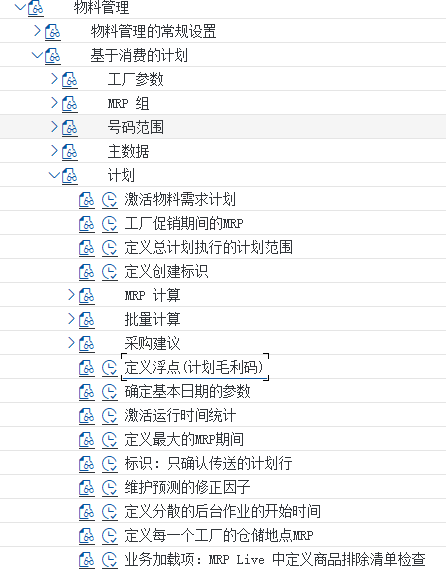
画面 549image557.png · 446×569 
画面 550image558.png · 618×207 -
「新規エントリ」をクリック
原文
点击新条目
画面 551image559.png · 627×185
プラントと在庫に関連するプラントパラメータのメンテナンス－在庫引当
IMG設定（カスタマイズ）3 画面 / 3 ステップ原語（中国語）
物料管理 → 库存管理和实际库存 → 工厂参数-
プラントには非常に多くの制御パラメータがあります。たとえば在庫管理（MM-IM）では、品目に対して引当番号によって引当を行うことができ、たとえば製造指図や受注伝票に対して引当を行います。このプラントでは、在庫の引当は計画日より 1 か月前倒しして使用でき、同時に、期限切れ後 1 か月以内の引当も引き続き使用できます。
原文
工厂中有非常多的控制参数，比如在库存管理中，对物料可以通过预留号进行预留，比如预留给生产订单或销售订单。在此工厂里，对库存的预留允许比计划日期提前一个月使用，同时过期 1 个月以内的预留仍然可以使用
画面 552image560.png · 377×257 -
前の画面に続けて操作します（画面 553）

画面 553image561.png · 427×165 -
「新規エントリ」をクリック
原文
点击新条目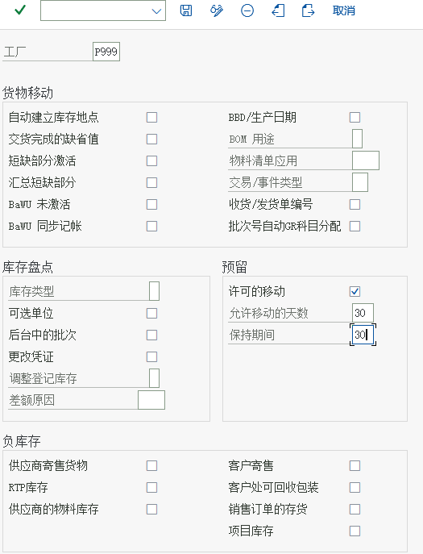
画面 554image562.png · 525×687 教材ノート「移動を許可」は、引当済みの品目に対して在庫移動を許可するかどうかの制御を指します。「移動可能日数」は、引当の計画使用日より 30 日早くから引当を使用できることを指します教材ノート保持期間とは、引当の計画使用日から過去 30 日以内であれば、引当を引き続き使用できることを指します
在庫関連のプラントパラメータのメンテナンス－品目の保管場所ビューの自動登録
IMG設定（カスタマイズ）3 画面 / 2 ステップ原語（中国語）
物料管理 → 库存管理和实际库存 → 发货/转储记帐 → 自动建立库存地点-
本プラントでは、どの品目をどの保管場所に保管できるかについて厳格な規定はなく、状況に応じてどの品目も 3 つの保管場所のいずれかに保管される可能性があります
原文
在本工厂里，对具体哪个物料可以存放在哪个库存地点没有硬性规定，根据情况任何物料在三个库存地点存放都有可能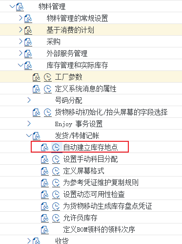
画面 555image563.png · 373×499 
画面 556image564.png · 286×226 -
プラントと操作中の品目移動タイプの両方が許可している場合にのみ、システムは品目の保管場所ビューを自動的に作成します。移動タイプについては、システムの標準設定をそのまま使用します。「プラント」をクリックします。
原文
只有当一个工厂和正在操作的物料移动类型都允许时，系统才会自动创建物料的库存地点视图。对于移动类型，我们保留系统的标准设置。点击工厂。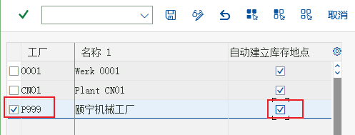
画面 557image565.png · 497×189 教材ノートP999 を選択し、「保管場所の自動登録」をクリック
税コードのデフォルト値をメンテナンス
IMG設定（カスタマイズ）3 画面 / 3 ステップ原語（中国語）
物料管理 → 后勤发票校验 → 收入发票 → 维护税代码的缺省值-
品目管理－ロジスティクス請求書照合（LIV）－受入請求書－税コードのデフォルト値のメンテナンス
この会社の購買請求書はほとんどが 13％の付加価値税請求書（中国税法では 13％、5％があり、仕入税と売上税に分かれます）であるため、ここでは既定値として設定し、請求書照合を容易にします。もちろん、既定値は業務処理の際に変更できます。原文
物料管理－后勤发票校验－收入发票－维护税代码的缺省值
在此公司里的采购发票大多数是 13％的增值税发票(中国税法 13%,5%,还分进项税和销项税)，所以这里设置为缺省值方便发票校验，当然缺省值在作业务操作时时可以更改的。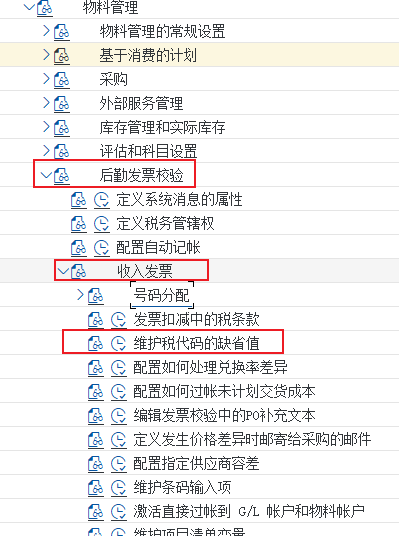
画面 558image566.png · 399×536 -
前の画面に続けて操作します（画面 559）

画面 559image567.png · 421×221 -
「新規エントリ」をクリック
原文
点击新条目
画面 560image568.png · 443×342
会社コードの品目管理の初期期間をメンテナンスします
IMG設定（カスタマイズ）2 画面 / 2 ステップ原語（中国語）
后勤常规 → 物料主记录 → 基本设置 → 维护物料管理的公司代码-
品目管理では SAP 上で当月の締めしか開けられないか、よくても当月と前月の締めまでしか開けられず、しかも締めは 1 か月ずつ後ろにしか開けられません。そのため、最初に初期期間を設定する必要があります。一般に初期期間は本番稼働前の月に設定します。たとえば 2021 年 12 月に本番稼働する場合は、初期期間を 2021 年 11 月に設定し、11 月に期末在庫残高をインポートします。
原文
物料管理在 SAP 中只能开当前月的帐，或者之多当月和上个月的帐，而且开帐只允许一个月一个月的向后开，所以在一开始我们要设定一个初始期间。一般初始期间设置为上线前的那个月，比如 2021年 12 月上线，就设定初始期间为 2021 年 11 月，在 11 月中导入期末库存余额。
画面 561image569.png · 374×264 -
前の画面に続けて操作します（画面 562）
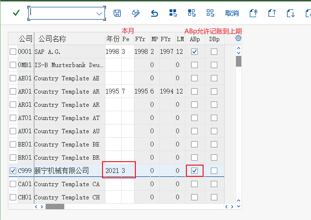
画面 562image570.png · 634×449 教材ノート年には当年を、月には当月を入力します。Abp をオンにすると、前月の在庫帳も同時に開くことを意味します
資材所要量計画（MRP）に関連するプラントパラメータをメンテナンスします
IMG設定（カスタマイズ）16 画面 / 8 ステップ原語（中国語）
物料管理 → 基于消费的计划 → 工厂参数 → 执行工厂参数总体维护-
前段で在庫関連のプラントパラメータをメンテナンスしました。本ステップでは、資材所要量計画（MRP）関連のプラントパラメータをメンテナンスします。パラメータが多いため、プラント 0001 をコピーしてから変更します。
原文
前面我们维护了库存相关的工厂参数。本步骤中，我们要维护和物料需求计划 MRP 相关的工厂参数，由于涉及参数太多，我们采用复制 0001 工厂再更改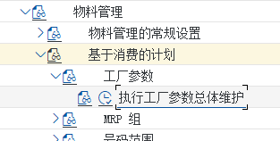
画面 563image573.png · 313×158 
画面 564image574.png · 289×304 画面 563image573.png · 313×158 画面 564image574.png · 289×304 -
「作成」をクリック
原文
点击创建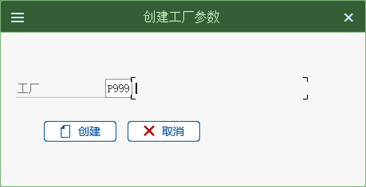
画面 567image575.png · 459×235 -
前の画面に続けて操作します（画面 568）

画面 568image576.png · 543×424 -
「コピー」キーをクリック
原文
点击复制键
画面 569image577.png · 459×235 -
システムに 0001 のパラメータが P999 にコピーされたことが表示されます。次に、不適切なパラメータを変更します。「メンテナンス」ボタンをクリックし、「メンテナンス」をクリックします
原文
系统显示，0001 的参数已经拷贝至 P999，接下来将不合适的参数改掉，点击维护按钮点击维护
画面 570image578.png · 277×32 
画面 571image581.png · 262×249 
画面 572image582.png · 459×235 
画面 573image583.png · 616×803 画面 571image581.png · 262×249 画面 572image582.png · 459×235 -
「メンテナンス」ボタンをクリック
「メンテナンス」はすでにメンテナンス済みであることを表し、「初期」はまだメンテナンスされていないことを表します。「番号範囲」キーをクリックすると、次のようになります：原文
点击维护按钮
“维护”表示已经维护了，“ 初始”代表尚未维护，点击号码范围键，进入：
画面 576image584.png · 308×508 -
関連する資材所要量計画（MRP）の番号範囲はすべてメンテナンス済みです。「戻る」キーをクリックし、「フローティング」をクリックします
原文
相关物料需求计划的号码范围已经全部维护，点击退回键，点击浮动
画面 577image585.png · 612×181 -
図のとおり、残りのコピーしたものはすべて削除します。削除後の最終結果は次のとおりです：
原文
如图所示，其余复制的都删除掉。删除之后的最终结果如下：
画面 578image586.png · 605×109
資材所要量計画を有効化
IMG設定（カスタマイズ）3 画面 / 3 ステップ原語（中国語）
物料管理 → 基于消费的计划 → 计划 → 激活物料需求计划-
品目管理－消費ベースの計画－計画－資材所要量計画（MRP）の有効化
原文
物料管理－基于消费的计划－计划－激活物料需求计划
画面 579image587.png · 377×296 -
前の画面に続けて操作します（画面 580）

画面 580image588.png · 336×251 -
「資材所要量計画」をクリックし、P999 の行を選択して、「所要量計画の有効化」欄のチェックボックスにチェックを入れ、「保存」をクリックします。
原文
点击物料需求计划，选中 P999 行，勾上激活需求计划栏的方框，点击保存。
画面 581image589.png · 636×175
計画実行の番号範囲を定義
IMG設定（カスタマイズ）7 画面 / 4 ステップ解説：資材所要量計画関連のプラントパラメータをコピーする際に、番号範囲も一緒にコピーされました。MRP 内のすべてのオブジェクトに番号範囲（01）が割り当てられていることを確認します。
原語（中国語）
解释：在复制物料需求计划相关的工厂参数时，编号范围一起复制了，确认 MRP 中所有的对象都分配了号码范围(01)。
物料管理 → 基于消费的计划 → 号码范围 → 定义计划运行的号码范围-
品目管理－消費ベースの計画－番号範囲－計画実行の番号範囲の定義
原文
物料管理－基于消费的计划－号码范围－定义计划运行的号码范围
画面 582image592.png · 391×273 
画面 583image593.png · 537×437 画面 582image592.png · 391×273 画面 583image593.png · 537×437 -
解説： 画面の各行は MRP 関連の伝票の一種です。「間隔」ボタンには番号間隔の定義が、「番号範囲」ボタンには番号間隔の割当があります。
MRP 一覧の番号範囲のインターバルボタンをクリックして進みます原文
解释：屏幕中每一行是一种 MRP 相关的凭证，间隔按钮里是编号间隔的定义，编号范围按钮里是分配编号间隔。
点击 MRP 清单号码范围的间隔按钮，进入
画面 586image594.png · 443×149 -
「インターバル変更」をクリックして進む
原文
点击修改间隔，进入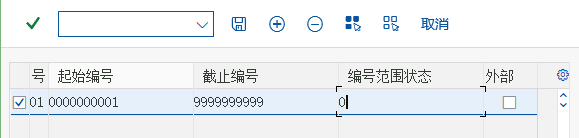
画面 587image595.png · 579×138 -
システムにはすでに番号範囲インターバルが 1 つあるため、インターバル 01 を使用します
終了し、「MRP 一覧」の番号範囲の番号範囲をクリックして、次に進みます：原文
系统中已经有一个号码范围间隔，我们将使用间隔 01
退出，点击 MRP 清单号码范围的编号范围，进入：
画面 588image596.png · 437×187 教材ノートP999 プラントで 01 の番号範囲を選択
品目タイプの属性を定義
IMG設定（カスタマイズ）3 画面 / 3 ステップ原語（中国語）
后勤常规 → 物料主数据 → 基本设置 → 物料类型 → 定义物料类型的属性-
解説： 品目タイプは品目マスタを定義する上で最も重要なパラメータの 1 つで、各品目マスタでどの情報とパラメータをメンテナンスする必要があるか、品目マスタの番号範囲などを決定します。頤寧公司は SAP の標準品目タイプ、たとえば HAWA の商品、ROH の原材料、FERT の完成品を使用することにしました。
原文
解释：物料类型是定义物料主数据最重要的一个参数，它决定了各类物料主数据需要维护哪些信息和参数，物料主数据的编号范围等。颐宁公司决定使用 SAP 的标准物料类型，如 HAWA 贸易商品，ROH 原材料，FERT 产成品。
画面 589image597.png · 408×370 -
前の画面に続けて操作します（画面 590）

画面 590image598.png · 422×483 -
解説： 画面の右側は現在システムにすでにある品目タイプの一覧で、左側は品目タイプのパラメータを階層的にメンテナンスします。該当の品目タイプをダブルクリックすると、第 1 階層の「品目タイプ」パラメータ定義に入れます。私たちはシステム標準の設定は変更せず、第 2 階層の、品目タイプの各プラントにおける「数量／金額更新」をメンテナンスします。
品目タイプ「HAWA」の商品（HAWA）を選択し、左欄の「数量/金額更新」をダブルクリックすると、次のようになります：原文
解释：屏幕的右方是目前系统中已经有的物料类型清单，左侧是分层维护物料类型的参数，双击相关的物料类型可以进入第一层：“ 物料类型” 参数定义。我们不改变系统标准的设置，我们维护第二层，物料类型在各工厂“数量/价值更新”。
选择物料类型“HAWA”贸易货物，双击左栏的“数量/价值更新”进入如下：
画面 591image599.png · 623×248 教材ノートP999 の数量更新および金額更新を選択します原理の説明解説：ある品目タイプを定義し、特定のプラントでは「非評価在庫」、つまり数量のみを記録して評価額を更新しない在庫にしたり、「数量管理なし在庫」にしたりすることができます。
評価管理を定義
IMG設定（カスタマイズ）4 画面 / 1 ステップ解説：品目管理（MM）と財務会計の最大の統合ポイントは自動記帳であり、すなわち MM の在庫移動が自動的に対応する会計伝票を生成します。本ステップと続く 2 つのステップは自動記帳を定義するための準備で、自動記帳そのものは 4.28 品目管理の自動記帳のメンテナンスで定義します。
原語（中国語）
解释：物料管理和财务会计最大的集成点是自动记账，也就是 MM 中的物料移动会自动产生相应的会计凭证。本步骤和随后的两个步骤是为了定义自动记账做准备，而自动记账则在4.28维护物料管理的自动记账中定义。
物料管理 → 评估和科目设置 → 科目确定 → 无向导的科目定义 → 定义评估控制-
より大きな柔軟性を持たせるため、プラントごとに自動記帳ルールを異なるものにできます。しかし、1 つのグループ企業に多くのプラントがあり、それらの記帳ルールが同じである場合、1 つずつメンテナンスするのは非常に面倒ではありませんか。しかもメンテナンスしにくく、誤りも発生しやすくなります。そこで SAP では、プラントを「グループ」にまとめて記帳ルールを統一的に定義できます。プラントは記帳ルールの中で「評価範囲」として定義され、そのグループは「評価グループコード」と呼ばれます。本ステップでは、このようにグループで記帳ルールを定義することを許可するかどうかを明確にします。次のステップでは、「評価範囲」を「評価グループコード」にまとめます。
品目管理－評価と勘定設定－勘定決定－ウィザードなしの勘定定義－評価管理の定義原文
为了使之具有更大的灵活性，在各自工厂自动记账规则是可以不同的。但是如果一个集团公司有很多工厂，而它们的记账规则又是一样的，那一个一个地维护岂不是非常麻烦？而且也不好维护，容易出错，所以 SAP 允许将工厂集合成“组”来统一定义记账规则，工厂在记账规则中被定义为“评估范围”，而它的组被称为“评估分组代码”。本步骤中，我们将明确是否允许这样分组定义记账规则。下一个步骤是将“评估范围”归并到“评估分组代码”
物料管理－评估和科目设置－科目确定－无向导的科目定义－定义评估控制
画面 592image602.png · 338×451 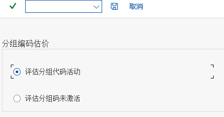
画面 593image603.png · 454×237 画面 592image602.png · 338×451 画面 593image603.png · 454×237 教材ノートこの画面では、「評価グループコード有効」を有効化して勘定を定義するか、有効化しないか（つまりプラントごとに 1 つずつ勘定を定義するしかない）を選択できます。ここでは「評価グループコード有効」を選択します。
評価範囲の集合をグループ化
IMG設定（カスタマイズ）2 画面 / 2 ステップ原語（中国語）
物料管理 → 评估和科目设置 → 科目确定 → 无向导的科目确定 → 将评估范围群集分组-
解説： 前のステップに続けて、「頤寧機械工場」の評価範囲（またはプラント）を、私たちが「CN01」と呼ぶ評価グループコードにまとめます。今後の自動記帳ルールの定義は「CN01」に従って定義します。頤寧公司がプラントを追加する場合、それらを「CN01」に配賦するだけで自動記帳でき、記帳ルールを新たに定義する必要はありません。
原文
解释：紧跟上个步骤，我们将“颐宁机械工厂”评估范围（或工厂），归入一个我们称之为 “ CN01 ” 的评估分组代码。将来自动记账规则的定义就是按 “ CN01 ” 来定义的。如果颐宁公司增加一个工厂，只需要将它们分配给“CN01”就可以自动记账了，而不必再定义一套记账规则。
画面 596image604.png · 340×492 -
P999 に CN01 を入力
原文
在 P999 输入 CN01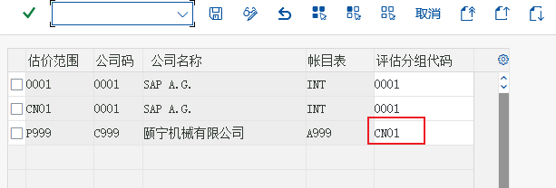
画面 597image605.png · 613×208
評価クラスを定義する
IMG設定（カスタマイズ）6 画面 / 3 ステップ標準の評価クラスで、主なものは「3000 原材料（ROH）」「3100 商品（HAWA）」「7920 完成品」の 3 つです。本ステップでは主に
原語（中国語）
准的评估类，主要有三个“3000 原材料”，“ 3100 贸易商品”，“ 7920 成品”。本步骤主要
物料管理 → 评估和科目设置 → 科目确定 → 无向导的科目确定 → 定义评估类-
システム標準の評価クラスを確認し、これらの評価クラスが適切な品目タイプに割り当てられているかを確認します。将来品目マスタをメンテナンスする際に、ある品目タイプに対して適切な評価クラスだけを選択できるようにするためです。
品目管理－評価と勘定設定－勘定決定－ウィザードなしの勘定決定－評価クラスの定義原文
就是检查系统标准的评估类，并检查这些评估类被分配给了合适的物料类型，将来在物料主数据维护时，保证只有合适的评估类可以被某类型的物料选用
物料管理－评估和科目设置－科目确定－无向导的科目确定－定义评估类
画面 598image606.png · 353×487 -
「評価クラス」をクリック、「評価クラス」をクリック
原文
点击评估类点击评估类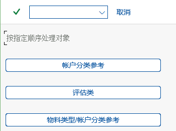
画面 599image609.png · 349×259 
画面 600image610.png · 555×545 画面 599image609.png · 349×259 画面 600image610.png · 555×545 -
3000、3100、7920 がすでに存在することが確認できます。「戻る」をクリックし、「品目タイプ/勘定分類参照」をクリックします
原文
可以看到 3000、3100、7920 都已经存在，返回，点击“物料类型/账户分类参考”
画面 603image611.png · 559×841 原理の説明解説：評価クラスは追加、削除、変更、コピーができます。評価クラスの横にある「勘定分類参照」は評価クラスをグループ化したものです。「勘定分類参照」自体は上の図の「勘定分類参照」ボタンでメンテナンスし、前の画面の「品目タイプ／勘定分類参照」ボタンによって「勘定分類参照」を各品目タイプに割り当てます。教材ノートFERT、HAWA および ROH がすでに存在することがわかります。「戻る」をクリックします。
原材料（ROH）のマスタデータを新規登録する
15 画面 / 9 ステップ原語（中国語）
后勤 → 物料管理 → 物料主数据 → 物料 → 创建（特殊） → MMR1 原材料-
解説： 頤寧公司の主な原材料には、フライホイール、管軸などがあります。これらの原材料マスタを新規登録します
ロジスティクス－品目管理－品目マスタ－品目－登録（特殊）－MMR1 原材料（ROH）原文
解释：颐宁公司主要的原材料有，飞轮、管轴等，我们要新建这些原材料主数据
后勤－物料管理－物料主数据－物料－创建（特殊）－MMR1 原材料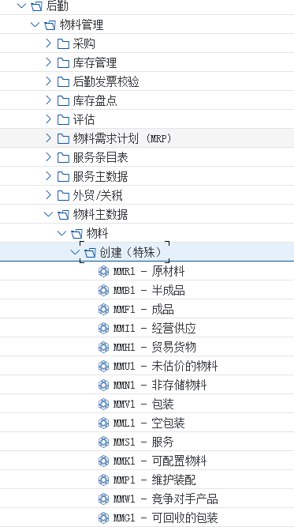
画面 604image612.png · 373×667 教材ノートトランザクションコード MMR1 を入力して次の画面に進みます： R999-100 カバー -
前の画面に続けて操作します（画面 605）

画面 605image613.png · 476×289 -
品目タイプによって、どのビューをメンテナンスできるかが決まります。次のとおり、ROH には販売ビューがありません
原文
物料类型决定了哪些视图是可维护的，如下 ROH 就没有销售视图
画面 606image617.png · 346×707 
画面 607image618.png · 346×707 
画面 608image619.png · 543×356 画面 606image617.png · 346×707 画面 607image618.png · 346×707 画面 608image619.png · 543×356 -
「Enter」をクリック
原文
点击回车
画面 612image620.png · 718×825 -
Enter で購買ビューへ進む
原文
回车进入采购视图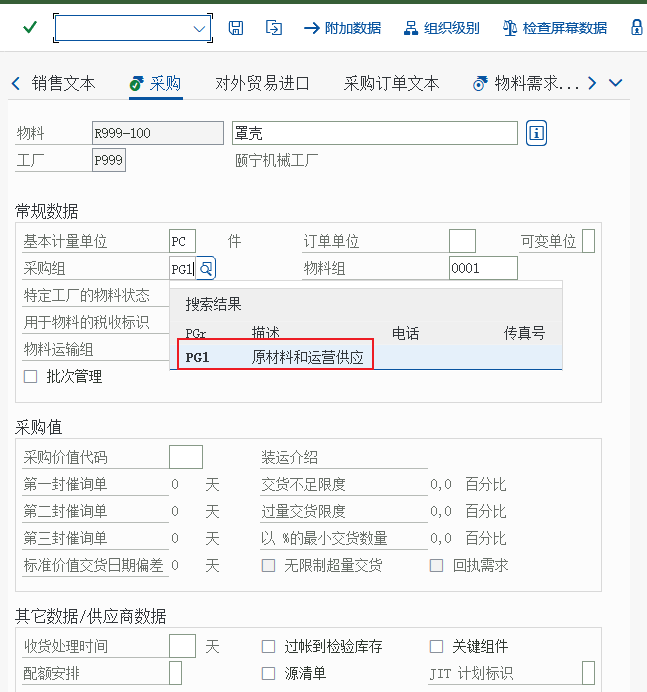
画面 613image621.png · 647×692 -
Enter で MRP1 ビューへ進む
原文
回车进入 MRP1 视图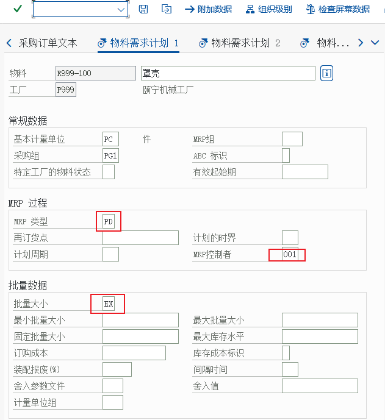
画面 614image622.png · 631×689 つまずき注意ロットサイズ：購買ロットサイズの決定原則は非常に複雑な問題です。SAP は非常に柔軟なツールを提供しており、たとえば期間ベース、動的、固定の GROFF 法、最大在庫まで補充する方法などがあります。ここでは EX（直接ロット発注量）を選択し、ロットごとに決定する方法、つまり具体的な所要量の大きさに応じて最大・最小ロットサイズなどの要素を組み合わせて今回のロットサイズを決定する方法を採用します。 -
MRP タイプ：SAP には 8 つの大分類の品目計画方法が組み込まれています。たとえば発注点計画、予測ベースの計画、期間段階計画、MRP、MPS、小売補充計画、MRP なし、MRP BOM 展開なしなどです。これら 8 つの大分類の方法に基づいて、IMG 設定で具体的な MRP タイプ「PD（資材所要量計画）」を定義できます。実際のプロジェクトでは、MPS と MRP の関係を特に区別する必要もあります。
原文
MRP 类型：SAP 内置了八大类物料计划的方法，如重订货点计划，基于预测的计划，时间阶段计划，MRP，MPS，零售补货计划，无 MRP，无 MRP BOM 展开等。根据这八大类方法，可以在后台配置中定义具体的 MRP 类型“PD(物料需求计划) ”。实际项目中还需要特别区分 MPS 和MRP 的关系。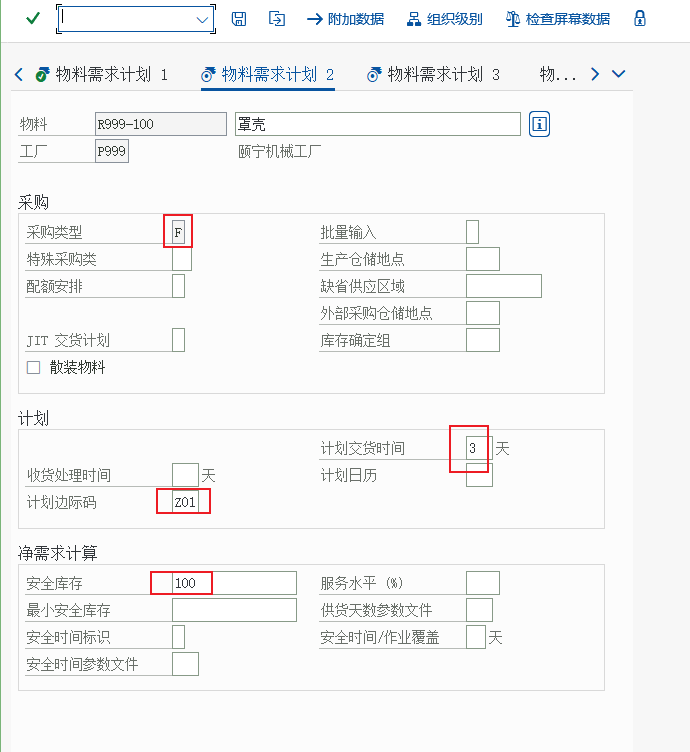
画面 615image623.png · 690×752 -
品目タイプは、その品目が自製か外部購買かを決定します。ここでの F は外部購買のみ可能であることを表し、100 は安全在庫 100 個を表します。
Enter で MRP3 ビューへ進む原文
物料类型决定了物料是自生产还是外采购，这里的 F 代表只能从外采购，100 代表 100 件安全库存
按回车进入 MRP3 视图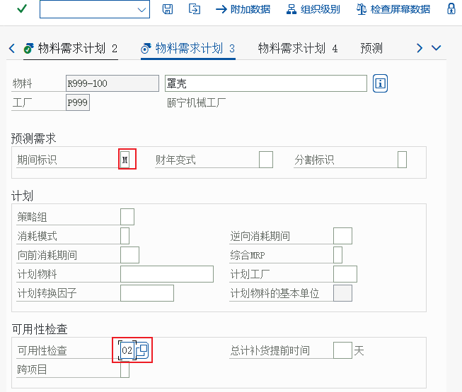
画面 616image624.png · 653×555 -
所要量チェックでは、生産を支えるのに十分な在庫があるかを確認します。主に期間別所要量と個別所要量の 2 種類がありますが、チェックのルールは SAP で柔軟に設定できます。
Enter を押して「会計 1」ビューに進みます。ここでは必ず評価クラスをメンテナンスしてください。原書に誤りがあり、原材料の評価クラスは 3000 です原文
可用性检查是否有足够的库存来支持生产。主要有按期间需求和按单独需求两类，但是检查的规则在 SAP 中有灵活的配置。
按回车进入“会计 1”视图 ,此处一定要维护评估类，原书有误，原材料的评估类为3000
画面 617image625.png · 657×604 
画面 618image626.png · 698×592 教材ノートV は移動平均価格による評価、S は標準原価による評価を表します。教材ノート価格単位：単価が非常に小さい場合は、10 個、100 個単位で価格単位を設定して価格精度を高めることができます。移動平均価格：ここに入力するのは初期価格で、将来の移動平均価格はシステムが自動計算します。教材ノート品目R999-200フライホイール評価クラスは3000品目R999-300管軸評価クラスは3000品目品目R999-400 R999-500支持フレーム金属片単位はM2評価クラスは3000評価クラスは3000品目R999-200フライホイール評価クラスは3000品目R999-300管軸評価クラスは3000品目品目R999-400 R999-500支持フレーム金属片単位はM2評価クラスは3000評価クラスは3000順に R999-200---R999-500 を登録
業務処理
商品（HAWA）マスタを新規作成
12 画面 / 5 ステップ原語（中国語）
后勤 → 物料管理 → 物料主数据 → 物料 → 创建（特殊） → MMH1-贸易货物-

画面 619image627.png · 477×376 
画面 620image630.png · 346×707 
画面 621image631.png · 543×356 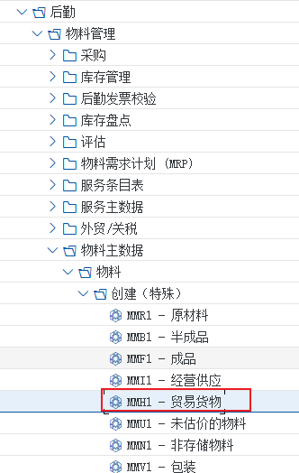
画面 622image632.png · 332×524 画面 620image630.png · 346×707 画面 621image631.png · 543×356 -

画面 625image633.png · 638×800 -
頤寧公司は自社でポンプを生産するほか、他メーカーの高速過給ターボポンプも販売しています。業務処理
ロジスティクス－品目管理－品目マスタ－品目－登録（特殊）－MMH1-商品（HAWA）原文
颐宁公司除了自己生产泵以外，还经销其他厂家的高速增压涡轮泵。前台
后勤－物料管理－物料主数据－物料－创建（特殊）－MMH1-贸易货物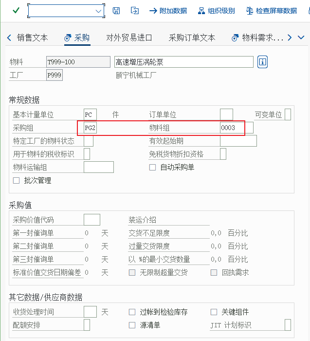
画面 626image634.png · 637×700 -
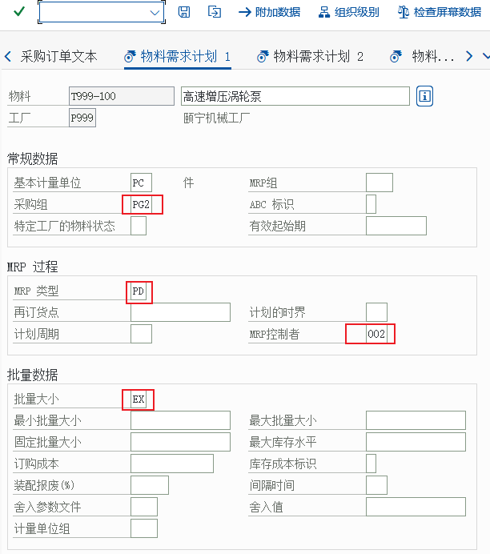
画面 627image635.png · 612×692 
画面 628image636.png · 633×686 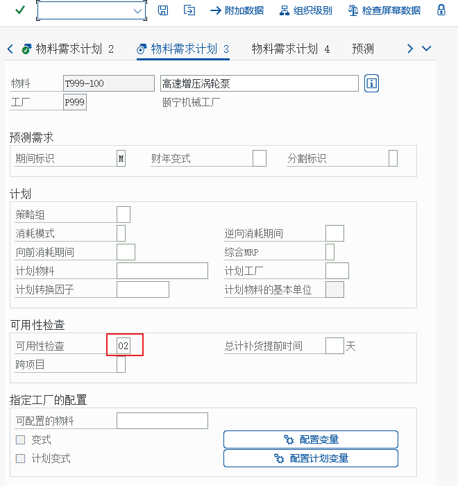
画面 629image637.png · 660×700 -
前の画面に続けて操作します（画面 630）

画面 630image638.png · 635×600
完成品（FERT）のマスタデータを新規登録する
10 画面 / 4 ステップ原語（中国語）
后勤 → 物料管理 → 物料主数据 → 物料 → 创建（特殊） → MMF1-成品-
頤寧公司が生産する製品は「鋳鋼ポンプ 170-230」です 業務処理
原文
颐宁公司生产的产品是“铸钢泵 170-230 ” 前台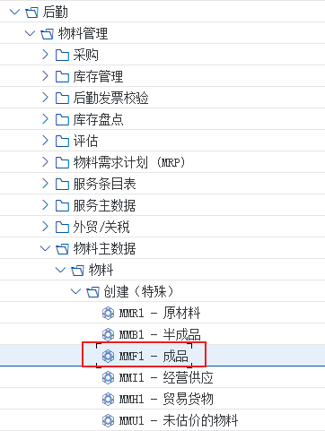
画面 631image639.png · 362×481 
画面 632image640.png · 478×284 -

画面 636image644.png · 646×700 
画面 637image645.png · 629×708 
画面 638image646.png · 609×557 -
前の画面に続けて操作します（画面 639）

画面 639image647.png · 664×606 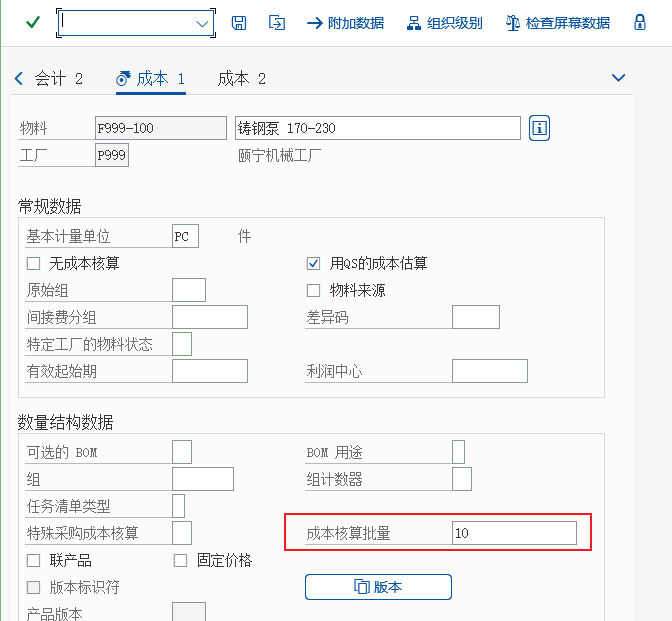
画面 640image648.png · 672×621 教材ノート原価計算ロットとは、10 個を標準ロットとして原価計算することです


品目マスタレコード一覧を照会
業務処理（トランザクション）MM603 画面 / 1 ステップ原語（中国語）
后勤 → 物料管理 → 物料主记录 → 其他 → MM60-物料清单-
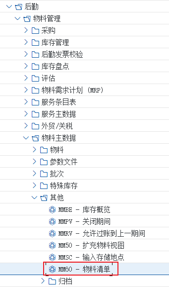
画面 641image649.png · 341×577 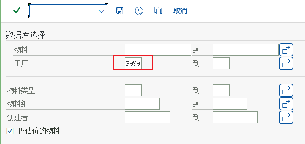
画面 642image650.png · 608×287 
画面 643image651.png · 932×276
仕入先購買データを登録
業務処理（トランザクション）MK018 画面 / 5 ステップ原語（中国語）
后勤 → 物料管理 → 采购 → 主数据 → 供应商 → 采购-MK01 创建-
解説： 紅星軸受工場は原材料の仕入先で、SAP 品目管理（MM）モジュールを使用していなかったときは、すでに財務でそのマスタデータをメンテナンスしていましたが、当時は一般データと会社コードデータ（財務関連）のみをメンテナンスしていました。今回は購買機能を使用してその購買行動を管理するため、その購買データをメンテナンスするだけで済みます。
ロジスティクス－品目管理－購買－マスタデータ－仕入先－購買-MK01 登録原文
解释：红星轴承厂是原材料供应商，在未使用 SAP 物料管理模块时，我们已经在财务中维护了它的主数据，但当时只维护了一般数据和公司代码数据（和财务相关的），现在我们要使用采购功能来管理他的采购行为，只需要维护它的采购数据。
后勤－物料管理－采购－主数据－供应商－采购-MK01 创建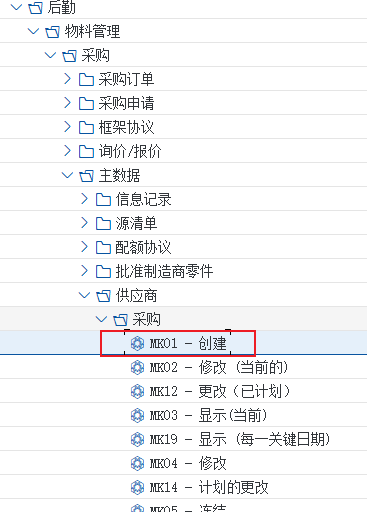
画面 644image652.png · 367×512 -
10000000
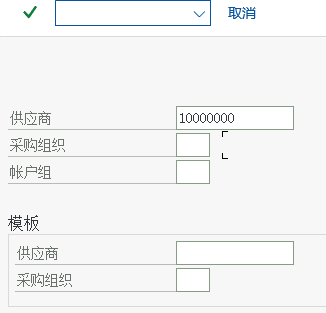
画面 645image655.png · 326×313 
画面 646image656.png · 320×343 画面 645image655.png · 326×313 画面 646image656.png · 320×343 -
前の画面に続けて操作します（画面 649）
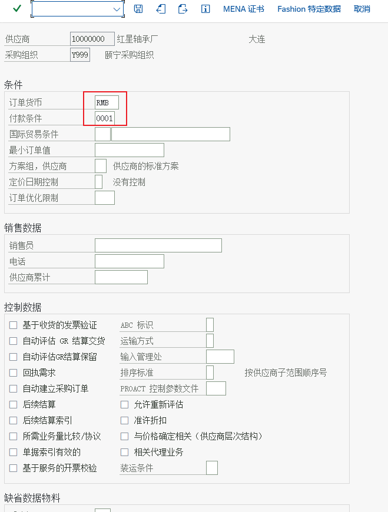
画面 649image657.png · 659×870 -

画面 650image658.png · 389×314 -
同時に他の仕入先もメンテナンスします。10000001、20000000
原文
同时将其他供应商维护好，10000001，20000000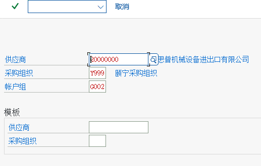
画面 651image659.png · 517×330
購買情報レコードを新規作成
業務処理（トランザクション）ME11MM0216 画面 / 9 ステップ原語（中国語）
后勤 → 物料管理 → 采购 → 主数据 → 信息记录 → ME11 创建-

画面 652image660.png · 324×504 -
解説： 頤寧は紅星から管軸を購買します。標準発注数量は 50 個、正味価格は 1700 元／個、3 日以内に納入し、購買グループ PG1 が担当します。
ロジスティクス－品目管理－購買－マスタデータ－購買情報レコード－ME11 登録原文
解释：颐宁向红星采购管轴，一般标准订单数量 50 件，净价 1700 元/件，3 天内交货，由采购组 PG1 负责。
后勤－物料管理－采购－主数据－信息记录－ME11 创建
画面 653image661.png · 272×422 
画面 654image662.png · 599×704 -
解説： 画面には、購買組織に関係しない一般データ（仕入先データ、原産地データ、単位変換など）をメンテナンスする内容が表示されています
「購買組織データ 1」をクリックすると、次の画面が表示されます：原文
解释：屏幕中显示的是维护一些和采购组织无关的一般数据，如供应商数据，原产地数据，单位转换等。
点击采购组织数据 1 键，出现如下屏幕：
画面 655image663.png · 607×667 -
同じ方法で R999-100～R999-500 および T999-100 を登録します
原文
同样的方法把 R999-100－R999-500 及 T999-100 创建
画面 656image666.png · 294×431 
画面 657image667.png · 611×661 画面 656image666.png · 294×431 画面 657image667.png · 611×661 -
2 番目の品目の購買情報レコード
原文
第二个物料的采购信息记录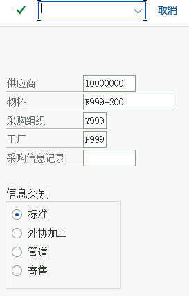
画面 660image668.png · 273×427 -
前の画面に続けて操作します（画面 661）

画面 661image669.png · 600×658 
画面 662image670.png · 286×428 
画面 663image671.png · 603×653 
画面 664image672.png · 290×426 教材ノート3 番目の品目の購買情報レコード教材ノート4 番目の品目の購買情報レコード -
トランザクションコード MM02 で修正
原文
通过事务代码MM02更正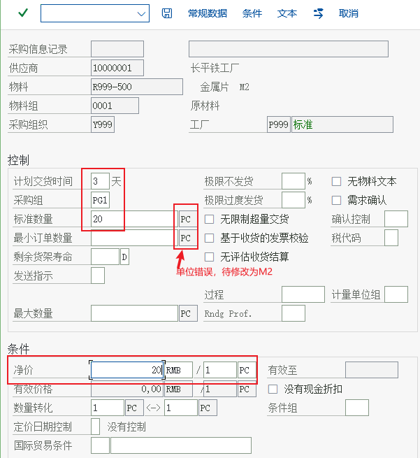
画面 665image673.png · 601×655 -
5 番目の品目の購買情報レコード
原文
第五个物料的采购信息记录
画面 666image674.png · 300×425 -
前の画面に続けて操作します（画面 667）

画面 667image675.png · 598×652
品目管理の自動記帳をメンテナンスする
IMG設定（カスタマイズ）15 画面 / 13 ステップ12110101 棚卸資産－原材料（ROH）
12310101 棚卸資産－商品（HAWA）
AUF は生産完了の入庫に関連しており、41010801 製造原価－完成品（FERT）の産出です
原語（中国語）
12110101 存货－原材料
12310101 存货－贸易商品
AUF 是和生产完工入库相关的，41010801 生产成本－产成品产出
物料管理 → 评估和科目设置 → 科目确定 → 无向导的科目确定 → 配置自动记帐| 項目（日本語） | 画面の中国語 | 教材の設定値 |
|---|---|---|
| 進む | 进入 | PRD |
-
解説： マスタデータのメンテナンスが完了したら、業務を開始する前にまだいくつか必須のシステム設定を行う必要があります。本ステップは SAP で最も重要な統合設定の 1 つ、すなわち品目の在庫移動が SAP でどのように自動的に勘定を見つけて自動記帳を完了するかを設定するものです。その準備作業は 1.19、1.20、1.21 ですでにメンテナンス済みです。
品目管理－評価と勘定設定－勘定決定－ウィザードなしの勘定決定－自動記帳の設定原文
解释：主数据维护好了，在开始业务之前，还有一些必须的系统配置要做，本步骤就是设置 SAP 中最为重要的集成配置之一，即物料移动在 SAP 中如何自动找到会计科目完成自动记帐。它的准备工作在 1.19、1.20、1.21 中已经维护好了。
物料管理－评估和科目设置－科目确定－无向导的科目确定－配置自动记帐
画面 668image676.png · 340×503 教材ノート表示される画面が下記の画面と異なる場合は、「キャンセル」をクリックすれば問題ありません。この画面は必ずしも表示されるとは限りません。システム内の他の会社コードの設定が不完全なために表示されることがあり、「キャンセル」をクリックすれば問題ありません。 -
前の画面に続けて操作します（画面 669）

画面 669image677.png · 517×211 -
解説： 「勘定割当」ボタンでは正式な勘定割当を行いますが、初心者にとっては「シミュレーション」ボタンが重要です。シミュレーションでは品目、プラント、移動タイプなどを入力でき、システムが「勘定割当」でどのように勘定を定義するかを示します。
「勘定割当」をクリック原文
解释：“ 科目分配” 按钮中是正式的科目分配工作，但是对于初学者来 “ 模拟” 按钮很重要，在模拟按钮中你可以输入物料、工厂、移动类型等，系统会提示你在“科目分配”中如何定义科目。
点击“科目分配”
画面 670image678.png · 626×855 -
「在庫転記 BSX」の行をダブルクリックすると、次の画面が表示されます：
原文
双击“存货记帐 BSX”行，弹出如下屏幕：
画面 671image679.png · 333×221 
画面 672image680.png · 527×258 -
解説： 画面では勘定割当が「トランザクション」別に分類されています。まず在庫の記帳を定義します。品目の移動は常に在庫勘定と関係するため、伝票には必ず在庫勘定の行があります。そこで、システムが在庫勘定をどのように決定するかを定義します。
解説：この画面では、在庫勘定が「評価修正」と「評価レベル」の影響を受けるかどうかを明確にします。ここではこの両者の影響を受けるように選択します。原文
解释：屏幕中科目分配被按“事务”分类。我们首先定义存货记帐。因为物料移动总和存货科目相关，所以凭证中总有一行是存货科目行，我们定义系统如何确定存货科目。
解释：在这个屏幕中，我们明确存货科目是否受“评估修改”和“评估级别”的影响，这里我们选择受这两者的影响。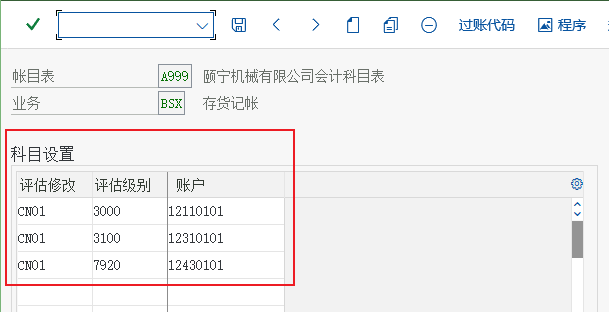
画面 673image681.png · 609×312 -
12430101 棚卸資産－完成品（FERT）
画面には、定義した各種の在庫勘定が表示されています。保存後に「戻る」をクリックします。原文
12430101 存货－产成品
屏幕中显示的是我们定义的各种存货科目，保存后点击返回。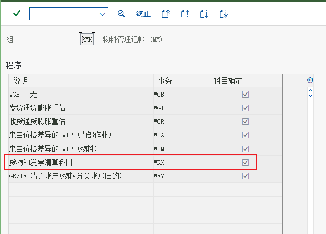
画面 674image682.png · 643×463 -
解説： 品目の購買では材料購買勘定（GR/IR）が関係し、これは「WRX」でメンテナンスします。トランザクション「在庫・請求書清算勘定 WRX」の行をダブルクリックすると、次の画面が表示されます。
原文
解释：物料采购会涉及材料采购科目（GR/IR）这是在“WRX”中维护的。 双击事务“货物发票清算科目 WRX”行，进入如下屏幕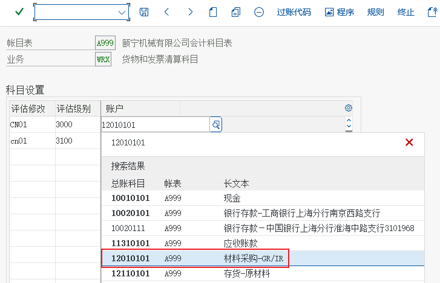
画面 675image683.png · 727×469 -
前の画面に続けて操作します（画面 676）
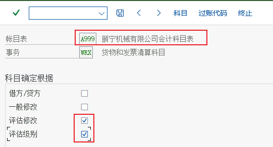
画面 676image684.png · 541×292 教材ノート12010101 材料購買－GR/IR 「戻る」をクリック -
「保存」をクリック
原文
点击保存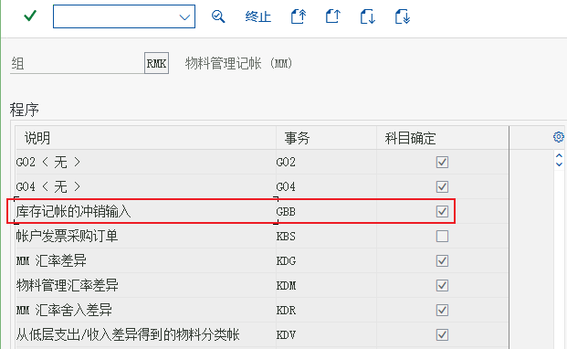
画面 677image685.png · 621×382 -
解説： 品目の移動に関連する会計伝票では、在庫の行以外の対応する行の勘定は「GBB」でメンテナンスします。例えば製造原価、売上原価などです。
トランザクション「在庫記帳の逆仕訳入力 GBB 行」をダブルクリックすると、次の画面が表示されます原文
解释：和物料移动相关的会计凭证除了库存这一行，对应的那行的会计科目在 “ GBB”中维护，必然生产成本、主营业务成本等。
双击事务“库存记帐的冲销输入 GBB 行”，进入如下屏幕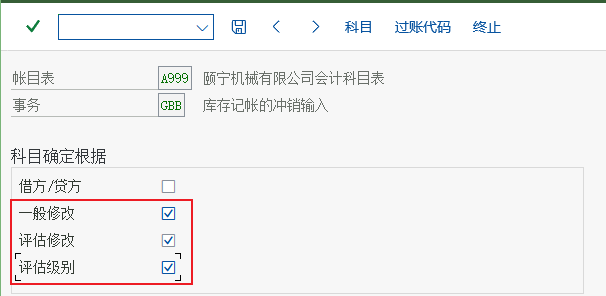
画面 678image686.png · 606×296 -
前の画面に続けて操作します（画面 679）

画面 679image687.png · 607×304 教材ノートVBR は生産出庫に関連します。41010101 製造原価－原材料消費を入力して「保存」をクリックし、「戻る」ボタンを押します。 -
VAX は販売出庫に関連しており、54010201 売上原価－商品（HAWA）です
54010101 売上原価－自製製品原文
VAX是和销售出库相关的，54010201 主营业务成本－贸易商品
54010101 主营业务成本－自制产品
画面 680image688.png · 640×409 -
前の画面に続けて操作します（画面 681）

画面 681image689.png · 509×277 
画面 682image690.png · 593×273 教材ノート54010301 売上原価－購買価格差異教材ノート54010401 売上原価－製造指図差異
在庫勘定を自動記帳専用に設定する
業務処理（トランザクション）FS003 画面 / 2 ステップ原語（中国語）
会计核算 → 财务会计 → 总账 → 主记录 → 总账科目 → 单个处理 → FS00 集中的-
会計－財務会計－総勘定元帳－マスタレコード－総勘定元帳勘定－個別処理－FS00 集中
原文
会计核算－财务会计－总账－主记录－总账科目－单个处理－FS00 集中的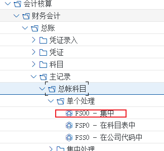
画面 683image691.png · 324×298 
画面 684image692.png · 626×490 -
解説： 品目管理を有効化すると、一部の勘定は統合によって自動記帳されます。勘定マスタでは、項目を「自動記帳のみ」に設定する必要があります
「登録/銀行/利息」を選択します（図のとおり）：12110101原文
解释：启用物料管理后，有些会计科目是通过集成自动记帐的，在会计科目主数据中需要设置条目为“只能自动记帐”
选择“创建/银行/利息”，如图所示：12110101
画面 685image693.png · 640×622 教材ノート12310101 と 12430101 をチェックし、同様に自動記帳を設定します
購買価格差異の許容範囲を設定します
IMG設定（カスタマイズ）6 画面 / 3 ステップ解説：SAP は購買発注を処理するとき、購買発注の価格と品目マスタの原価価格にどれだけ差異があるかをチェックし、同時に購買発注の現金割引が受け入れ可能かどうかもチェックします。差異が一定の許容範囲を超えると、システムは警告メッセージまたはエラーメッセージを発行します。異なる許容範囲チェックは「許容範囲キー」に格納されており、許容範囲キー「PE」は価格をチェックし、「SE」は現金割引をチェックします。
原語（中国語）
解释：SAP 在处理采购订单时，会检查采购订单中的价格和物料主数据中的成本价格差异有多大，同时也会检查采购订单中的现金折扣是否可接受。如果差异超过一定的容差，系统将发出警告消息或者报错消息。不同的容差检查存放在“容差码”中，容差码“PE ” 是检 查价格的，“ SE ” 是检查现金折扣的。
物料管理 → 采购 → 采购订单 → 设置价格差异的容差限制-
品目管理－購買－購買発注－価格差異の許容範囲の設定
原文
物料管理－采购－采购订单－设置价格差异的容差限制
画面 686image696.png · 664×678 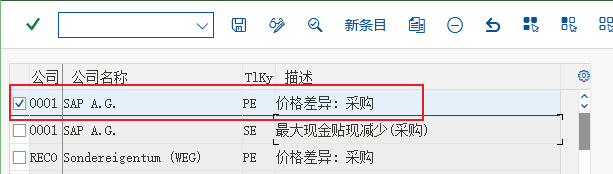
画面 687image697.png · 613×174 画面 686image696.png · 664×678 画面 687image697.png · 613×174 -
解説： 画面には既に会社がメンテナンスされているため、テンプレート会社 0001 をコピーする方法を採用します。会社 0001 を選択し、TlKy（許容範囲コード）が PE の価格差異、購買行を選択してコピーします。
解説：許容範囲には上限と下限があり、絶対差異とパーセント差異のどちらか一方でも超えると、許容範囲を超えたとみなされます。原文
解释：屏幕中已经有公司维护了，我们采用复制模板公司 0001 公司的方法。选中 0001 公司，TlKy（容差码）为 PE 的价格差异，采购行，复制。
解释：容差分上限和下限，同时绝对差异和百分比差异只要有一个超出就认为容差被超出了。画面 690image698.png · 602×568 -
上記の方法を繰り返し、許容範囲 SE 最大キャッシュディスカウント減（購買）を会社コード C999 にコピーします
原文
重复上述方法，复制容差限制 SE 最大现金贴现减少（采购）到公司代码 C999
画面 691image699.png · 646×558
入庫の許容範囲を設定
IMG設定（カスタマイズ）5 画面 / 4 ステップ原語（中国語）
物料管理 → 库存管理和实际库存 → 收货 → 设置容差限制-
画面 692image700.png · 462×395 -
解説： SAP では、購買発注の価格設定数量単位と購買発注数量単位を異なるものにできます。たとえば、購買発注数量は個数単位ですが、価格設定はキログラム単位です。この場合、入庫時には両方の単位の数量を入力する必要があります。入庫時、システムは価格設定数量と購買発注の差異をチェックし、許容範囲キー「B1」を超えるとエラーメッセージを発行し、「B2」を超えると警告メッセージを発行します。ここでは、テンプレート会社 0001 をコピーする方法で頤寧公司の入庫許容範囲を登録します。
品目管理－在庫管理と実地棚卸－入庫－許容範囲の設定原文
解释：SAP 允许采购订单定价数量单位和采购订单数量单位不同，比如采购订单数量是按件，但是定价是按公斤。在这种情况下，当收货时，两种单位的数量都需要输入。在收货时，系统会检查定价数量和采购订单中的差异，容差码 “ B1 ” 被超出会发出错误信息，“ B2 ” 被超出时会发出警告消息。这里我们采用复制模板公司 0001 的方式建立颐宁公司的收货容差限制。
物料管理－库存管理和实际库存－收货－设置容差限制
画面 693image701.png · 621×605 -
B1、B2 を選択してコピーし、会社名を C999 に変更してから Enter を押します
原文
选中 B1、B2 复制，修改公司名称为C999，然后回车姐
画面 694image702.png · 568×612 
画面 695image703.png · 569×553 -
前の画面に続けて操作します（画面 696）
画面 696image704.png · 612×160
請求書ブロックの許容範囲を設定
IMG設定（カスタマイズ）18 画面 / 6 ステップ原語（中国語）
物料管理 → 后勤发票校验 → 发票冻结 → 设置容差限制-
品目管理－ロジスティクス請求書照合（LIV）－請求書ブロック－許容範囲の設定
原文
物料管理－后勤发票校验－发票冻结－设置容差限制
画面 697image705.png · 298×525 -
画面には、すでに存在する許容範囲管理の会社コード一覧が表示されます。
会社コード 0110 を選択、TlKy は AN、AP、BD、BR、BW、DQ、DW、KW、PP、PS、ST、VP原文
屏幕中显示的是已经存在的容差控制的公司代码清单。
选择公司代码 0110，TlKy 为 AN、AP、BD、BR、BW、DQ、DW、KW、PP、PS、ST、VP画面 701image709.png · 595×544 -

画面 702image713.png · 322×351 
画面 703image714.png · 558×559 
画面 704image715.png · 566×555 
画面 705image716.png · 569×560 画面 702image713.png · 322×351 画面 703image714.png · 558×559 画面 704image715.png · 566×555 -

画面 709image719.png · 586×569 
画面 710image720.png · 562×565 画面 709image719.png · 586×569 画面 710image720.png · 562×565 -
前の画面に続けて操作します（画面 713）
画面 713image721.png · 550×548 画面 714image722.png · 389×380

項目金額チェックをメンテナンス
IMG設定（カスタマイズ）3 画面 / 3 ステップ原語（中国語）
物料管理 → 后勤发票校验 → 发票冻结 → 项目金额检查 → 激活项目金额检查-
品目管理－ロジスティクス請求書照合（LIV）－請求書ブロック－明細金額チェック－明細金額チェックの有効化
原文
物料管理－后勤发票校验－发票冻结－项目金额检查－激活项目金额检查
画面 715image723.png · 300×491 -
前の画面に続けて操作します（画面 716）

画面 716image724.png · 445×231 -
「新規エントリ」をクリックし、頤寧公司を追加します
原文
点击新条目，将颐宁公司添加进来
画面 717image725.png · 486×137
資材所要量計画を実行
業務処理（トランザクション）MD0310 画面 / 4 ステップ原語（中国語）
后勤 → 物料管理 → 物料需求计划（MRP） → 物料需求计划 → 计划 → MD03 单层-
ロジスティクス－品目管理－資材所要量計画（MRP）－資材所要量計画－計画－MD03 単一レベル
原文
后勤－物料管理－物料需求计划（MRP）－物料需求计划－计划－MD03 单层
画面 718image726.png · 288×505 画面 719image727.png · 593×491 -
解説： 現在、頤寧機械工場では各種品目の在庫はすべて 0 ですが、多くの品目で安全在庫が要求されています。ここで MRP を実行し、結果を見てみます。BOM は生産計画（PP）モジュールまで待ってメンテナンスするため、現時点では BOM 展開できず、単層計画となります。
Enter を押すと、システムがパラメータの確認を促すので、もう一度 Enter を押します原文
解释：现在颐宁机械工厂里各种物料的库存都是 0，但是很多物料都要求有安全库存，现在来运行一下 MRP，看一下结果。由于 BOM 要等到生产计划模块维护，现在不能按 BOM 展开，所以是单层计划
回车后，系统会提示检查参数，再次回车
画面 720image728.png · 616×935 -
前の画面に続けて操作します（画面 721）
画面 721image729.png · 286×105 -
同じ方法で T999-100、R999-100、R999-200、R999-300、R999-400、R999-500 に対して計画を実行します
原文
同样的方法对 T999-100、R999-100、R999-200、R999-300、R999-400、R999-500 运行计划


在庫／所要量一覧を照会
業務処理（トランザクション）MD043 画面 / 3 ステップ原語（中国語）
后勤 → 生产 → 物料需求计划 → 评估 → MD04-库存/需求清单-
解説： 前回の MRP の実行は、たとえば毎晩など定期的に行われ、その結果もシステムに静的に保存されています。品目の動的な需給バランス一覧を確認するには、SAP の「在庫／所要量一覧」を表示します。
ロジスティクス－生産－資材所要量計画－評価－MD04-在庫/所要量一覧原文
解释：上个 MRP 的运行是定期进行的，例如每天晚上，他的结果在系统中也是静态保存的。要看动态的物料的供需平衡清单，需要到 SAP“库存/需求清单”中来显示
后勤－生产－物料需求计划－评估－MD04-库存/需求清单
画面 728image736.png · 457×729 -
前の画面に続けて操作します（画面 729）
画面 729image737.png · 404×286 -
このページは MRP 実行結果と似ていますが、動的に実行でき、データは現在の需給状況を反映します。実行後、購買依頼を生成することも、手動で生成することもできます。
原文
这个页面和 MRP 运行结果类似，但是它可以动态运行，数据反应的是当前供需的情况。运行后采购申请可生成，也可手工生成。
画面 730image738.png · 1155×334 教材ノートEnter 後、次の画面へ進む
購買依頼を新規作成
ME51N6 画面 / 6 ステップ解説：MRP 実行の結果は、原材料（ROH）に対する購買依頼と完成品（FERT）に対する計画手配です。したがって、計画と購買のプロセスのつなぎ目は購買依頼の登録です。PP モジュールの学習では、MRP が生成した購買依頼に基づいて直接購買発注を登録します。ここでは、手作業で新規に購買依頼を登録するところからプロセスを始めます。本ステップでは、頤寧公司の計画
原語（中国語）
解释：MRP 运行的结果是对原材料的采购申请和对产成品的计划订单，所以生成计划和采购的流程衔接是采购申请的创建。在 PP 模块的学习中我们将根据 MRP 产生的采购申请直接来创建采购订单。现在我们的流程从手工新建采购申请开始。本步骤中，颐宁公司的计划
后勤 → 物料管理 → 采购--采购申请 → ME51N → 创建-
部門が手作業で購買依頼を作成し、原材料（ROH）と商品（HAWA）の一括購買を申請します。業務処理
ロジスティクス－品目管理－購買--購買依頼－ME51N－登録原文
部门手工填制采购申请，申请采购一批原材料和贸易商品前台
后勤－物料管理－采购--采购申请－ME51N－创建
画面 731image739.png · 265×219 -
初めてページを開くとヘルプが表示されますが、閉じてかまいません
原文
第一次进入页面会有帮助，可关闭画面 732image740.png · 808×404 原理の説明解説：購買依頼の画面は、主に最上部の「伝票タイプと伝票番号」行とヘッダ情報、明細概要情報、明細詳細情報の 3 層で構成されます。左側のボタンをクリックすると、入力画面を展開または折りたたむことができます。 -
「項目概要」ボタンをクリックすると、次の画面に進みます：
原文
点击项目概览按钮，进入如下页面：画面 733image741.png · 1150×710 -
明細概要で、購買を依頼する品目、数量、納入日付、納入プラントなどの情報を入力します。入力内容は次のとおりです：
原文
在项目概览里，输入申请采购的物料，数量，交货日期和交货工厂等信息，录入如下：画面 734image742.png · 1097×348 -
Enter キーを押すと、各明細行が展開されます
原文
点击回车键，各个明细行会被展开
画面 735image743.png · 1075×336 教材ノート「保存」をクリックすると、次のメッセージが表示されます： -
前の画面に続けて操作します（画面 736）

画面 736image744.png · 243×34
購買発注を新規作成
業務処理（トランザクション）ME21N9 画面 / 8 ステップ原語（中国語）
后勤 → 物料管理 → 采购 → 采购订单 → 创建 → ME21N → 已知供应商/供应工厂-
解説： 計画部門の購買依頼に基づき、購買部門は仕入先から購買する必要がありますが、ここで「供給元決定」という問題、すなわちどの仕入先から購買するかがあります。SAP には複数の供給元決定の方式があります。この例では、人為的に仕入先を選択する方式を採用し、購買部門が購買発注を登録するときに仕入先を手入力します。
ロジスティクス－品目管理－購買－購買発注－登録－ME21N－既知の仕入先／供給プラント原文
解释：根据计划部门的采购申请，采购部门需要向供应商采购，这其中有一个“货源确定”的问题，即向哪个供应商采购。SAP 有多种货源确定的方式。在我们的例子里，我们采用人为选择供应商的方式，即由采购部门在创建采购订单的时候，手工录入供应商
后勤－物料管理－采购－采购订单－创建－ME21N－已知供应商/供应工厂画面 737image745.png · 989×263 -
購買発注の登録画面は購買依頼と似ていますが、伝票タイプが異なり、仕入先項目が追加されています。「伝票概要」のオープンキーをクリックすると、次の画面が表示されます。
原文
新建采购订单和采购申请页面类似，但是凭证类型不同，而且多了供应商字段点击凭证概览打开键，出现如下屏幕
画面 738image746.png · 1008×301 -
左側の小花キーをクリックします（下図の左のとおり）。次に「マイ購買依頼」を選択します（下図の右のとおり）
原文
点击左栏小花键，如下左图，然后选择我的采购申请，如下右边的图
画面 739image747.png · 362×531 
画面 740image748.png · 363×410 -
解説： 伝票概要は操作担当者にとって便利な各種ツールです。購買発注、購買依頼、枠組み契約などをさまざまな方法で検索できます。ここでは自分で登録した購買依頼を選択します。
左側の購買依頼を選択し、「採用」ボタンをクリックします（購買依頼の上部にあるコピーに似たボタンで、小花ボタンの隣のボタンです）原文
解释：凭证概览是方便操作人员的各种工具。我们可以用各种方法来查找采购订单，采购申请，框架协议等，这里我们选择自己创建的采购申请。
选择左侧的采购申请点击采用按钮（采购申请上部类似复制的按钮，小花按钮边上的按钮）
画面 741image749.png · 1066×398 -
Enter 後、下図のとおり
原文
回车后，如下图所示
画面 742image750.jpeg · 1347×533 -
購買組織 Y999、仕入先 10000000 を入力
「項目概要」をクリックすると、下図のとおり原文
输入采购组织 Y999，供应商 10000000
点击项目概览，如下图所示
画面 743image751.png · 1157×364 -
前の画面に続けて操作します（画面 744）
画面 744image752.png · 459×235 -
ここは原材料の購買であるべきなので、T999-100 を削除できます。「保存」をクリックすると、該当する購買発注が生成されます。
原文
此处应该是原材料的采购，可将 T999-100 删除。点击保存即可生成相应的采购订单。
画面 745image753.png · 278×31
購買の入庫を登録する
MIGO8 画面 / 7 ステップ原語（中国語）
后勤 → 物料管理 → 库存管理 → 货物移动 → 收货 → 对采购订单 → 采购订单的 GR（MIGO）-
ロジスティクス－品目管理－在庫管理（MM-IM）－在庫移動－入庫－購買発注に対して－購買発注の GR（MIGO）
原文
后勤－物料管理－库存管理－货物移动－收货－对采购订单－采购订单的 GR（MIGO）画面 746image754.png · 411×433 画面 747image755.png · 1295×546 -
解説： 前のステップで購買発注を登録しました。ここで仕入先が品物を納入したため、入庫の業務処理を行う必要があります。業務処理
解説：上の図が購買発注の入庫の画面です。画面の右上で購買発注番号とプラントを入力し、画面の中央は品目伝票の明細一覧、画面の下は入庫明細の詳細、画面の左は自分が処理した購買発注と品目伝票の履歴です。では購買発注番号を入力します。原文
解释：上一步我们创建了采购订单，现在供应商把货送到了，我们需要办理收货前台
解释：上图就是采购订单收货的屏幕，屏幕右上方输入采购订单号和工厂，屏幕中间是物料凭证的行总揽，屏幕下方是个收货行的明细，屏幕的左方是你自己处理过的采购订单和物料凭证的历史。我们来输入采购订单号
画面 748image756.png · 882×114 -
前の画面に続けて操作します（画面 749）

画面 749image757.jpeg · 1304×526 -
購買発注の行の明細が自動的に画面下部にコピーされます。明細行の画面で関連情報を入力します。保管場所 001 を入力します。注意：各行で同じ操作を行う必要があります。
原文
采购订单行的明细被自动复制到了屏幕下方，我们在行项目明细的屏幕中填写相关信息。输入库存地点 001，注意，每一行都要做相同的操作
画面 750image758.jpeg · 1401×924 -
「明細決定」オプション（左下）にチェックを入れ、「保存」ボタンをクリックします。保存前に「チェック」をクリックして、誤りがないか確認するとよいでしょう
原文
勾上项目确定选项（左下角），点击保存按钮，保存之前最好点个检查，看看是否有误
画面 751image759.jpeg · 1320×955 -
画面上部の入庫を A04 の表示に変更し、Enter を押してから、タブをファイル情報に切り替えます
原文
将屏幕上方的收货改为显示A04，点击回车，然后将标签页切换到文件信息画面 752image760.jpeg · 1351×788 -
文書情報ページで「FI 伝票」をクリックすると、伝票の情報を確認できます
原文
在文件信息页，点击 FI 凭证，可以看到凭证的信息
画面 753image761.png · 753×584
購買請求書を入力する
MIRO5 画面 / 4 ステップ原語（中国語）
后勤 → 物料管理 → 后勤发票校验 → 凭证输入 → MIRO 输入发票-
解説： 仕入先の購買請求書は、その後に業務処理へ届きます
ロジスティクス－品目管理－ロジスティクス請求書照合（LIV）－伝票入力－MIRO 請求書の入力原文
解释：供应商的采购发票随后送到前台
后勤－物料管理－后勤发票校验－凭证输入－MIRO 输入发票
画面 754image762.png · 315×211 
画面 158image161.png · 228×194 教材ノートPO 参照で、下図のとおりに購買発注を入力し、Enter をクリックします。 -
前の画面に続けて操作します（画面 756）

画面 756image763.png · 882×691 -
まず「税額を計算」を選択して Enter キーを押し、残高欄の金額を金額欄にコピーして Enter をクリックします
原文
先选中计算税额，按回车键，将余额处的金额拷贝在金额处，点击回车画面 757image764.png · 985×759 -
前の画面に続けて操作します（画面 758）

画面 758image765.jpeg · 1149×941 教材ノート「保存」をクリックします。許容範囲を超過した場合は、請求書がブロックされます
ブロック請求書の解除
MRBR4 画面 / 2 ステップ原語（中国語）
后勤 → 物料管理 → 后勤发票校验 → 进一步处理 → MRBR 下达冻结发票-
ロジスティクス－品目管理－ロジスティクス請求書照合（LIV）－追加処理－MRBR ブロック請求書の解除
原文
后勤－物料管理－后勤发票校验－进一步处理－MRBR 下达冻结发票
画面 759image766.png · 405×548 -
前の画面に続けて操作します（画面 760）
教材ノート選択してから小さな緑の旗をクリックし、保存します教材ノートこれで請求書がリリースされました。


{kind=link}
{kind=link}
{kind=link}
{kind=link}
{kind=link}
{kind=link}
{kind=link}
{kind=link}
{kind=link}
{kind=link}
{kind=link}
{kind=link}
{kind=link}
{kind=link}
{kind=link}
{kind=link}
{kind=link}
{kind=link}
{kind=link}
{kind=link}
{kind=link}
{kind=link}
{kind=link}
{kind=link}
{kind=link}
{kind=link}
{kind=link}
{kind=link}
{kind=link}
{kind=link}
{kind=link}
{kind=link}
{kind=link}
{kind=link}
{kind=link}
{kind=link}
{kind=link}
{kind=link}
{kind=link}
{kind=link}
{kind=link}
{kind=link}
{kind=link}
{kind=link}
{kind=link}
{kind=link}
{kind=link}
{kind=link}
{kind=link}
{kind=link}
{kind=link}
{kind=link}
{kind=link}
{kind=link}
{kind=link}
{kind=link}
{kind=link}
{kind=link}
{kind=link}
{kind=link}
{kind=link}
{kind=link}
{kind=link}
{kind=link}
{kind=link}
{kind=link}
{kind=link}
{kind=link}
{kind=link}
{kind=link}
{kind=link}
{kind=link}
{kind=link}
{kind=link}
請求書と会計伝票を照会
4 画面 / 4 ステップ原語（中国語）
后勤 → 物料管理 → 后勤发票校验 → 进一步处理 → MIR4 显示发票凭证-
解説： 請求書照合でも会計伝票が自動的に生成されます。本ステップでは、先に入力した請求書と生成された伝票を業務処理でさらに確認します
ロジスティクス－品目管理－ロジスティクス請求書照合（LIV）－追加処理－MIR4 請求書伝票の照会原文
解释：发票校验也会自动生成会计凭证，本步骤进一步展示前面输入的发票及产生的凭证前台
后勤－物料管理－后勤发票校验－进一步处理－MIR4 显示发票凭证
画面 763image770.jpeg · 472×422 -
前の画面に続けて操作します（画面 764）
画面 764image771.png · 453×170 -
「伝票照会」を選択
原文
选择显示凭证
画面 765image772.jpeg · 1084×787 教材ノート「後続伝票」をクリックすると、会計伝票の概要が表示されます -
前の画面に続けて操作します（画面 766）

画面 766image773.jpeg · 926×594
{kind=link}
在庫品目を照会
業務処理（トランザクション）MMBE3 画面 / 3 ステップ原語（中国語）
后勤 → 物料管理 → 库存管理 → 环境 → 库存 → MMBE → 库存总览-
ロジスティクス－品目管理－在庫管理（MM-IM）－環境－在庫－MMBE－在庫一覧
原文
后勤－物料管理－库存管理－环境－库存－MMBE－库存总览画面 767image774.png · 396×451 -

画面 768image775.jpeg · 742×836 -
前の画面に続けて操作します（画面 769）
画面 769image776.jpeg · 1178×544
{kind=link}
{kind=link}
4. スクリーンショットと設定値について
S4.docx の著者が実システムでキャプチャした中国語インターフェースの画面です（元のファイル名 imageNNN.png は各図の図注に残しているので、Word の原文と 1 枚ずつ照合できます）。当サイトはこれらの画面を一切描き直したり、シミュレーションで再現したりしていません。C999、会社名「頤寧機械有限公司」、プラント F999、品目 R999-100/T999-100/F999-100、得意先 K001/K002 など）はすべて原作者の教材環境のものです。手順どおりに作業するときは、操作の順序と設定ポイントはそのまま流用できますが、具体的な番号や名称はご自身のシステムの値に置き換えてください；ドキュメントと異なるメッセージが出た場合は、まず「トラブルシューティングと注意点」ページで原教材ドキュメントに記録された同種の問題を確認してください。